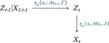

I'm a recently-graduated Ph.D. from Brown University's Division of Applied Mathematics. For my dissertation, I derived a novel approach to Bayesian filtering, the Discriminative Kalman Filter, motivated by and developed with my advisor M. Harrison and collaborator D. Brandman. We validated and successfully implemented this filter as part of the BrainGate Clinical Trial to enable participants with quadriplegia to communicate and interact with their environments in real time using mental imagery alone. See slides from my defense here.
Filtering
Suppose there is some underlying process Z1:t=Z1,…,Zt about which we are very interested, but that we cannot observe. Instead, we are sequentially presented with observations or measurements X1:t=X1,…,Xt where each Xi depends only on the current latent state Zi . We visualize this process with the following graph:
Filtering is the process by which we use the observations X1,…,Xt to form our best guess for the current latent state Zt .
Dynamic State Space Models
Under the Bayesian approach to filtering, X1:t , Z1:t are endowed with a joint probability distribution. The graphical model encodes the process to generate X1:t , Z1:t as:This model is variously known as a dynamic state-space or hidden Markov model. It provides a visual description of how to generate a sample x1:t , z1:t from the random variables X1:t , Z1:t. We start with z1 drawn from its marginal distribution p(z1). We then generate an observation x1 using the distribution p(x1|z1). At each subsequent time step t, we draw zt from the distribution p(zt|zt-1) and xt from the distribution p(xt|zt). These two conditional distributions are very important and characterize the generative process up to the specification of Z1. The first, p(zt|zt-1), relates the state at time t to the state at time t-1 and is often called the state or prediction model. The second, p(xt|zt), relates the current observation to the current state and is called the measurement or observation model.
Bayesian Filtering
The Bayesian solution to the filtering problem returns the conditional distribution of Zt given that X1 ,…, Xt have been observed to be x1 ,…, xt . We refer to this distribution p(zt|x1:t) as the posterior. The Chapman–Kolmogorov recursionrelates the posterior at time t to the one at time t-1. Bayesian filtering solves or approximates the above integral. Common approaches include Kalman filtering, variational methods, quadrature methods, and Monte Carlo-based particle filtering.
Kalman Filter
The Kalman filter specifies both the state model and measurement model as linear, Gaussian.

Here, ηd(· ; μ ,Σ) denotes the d-dimensional Gaussian density with mean μ and covariance Σ. In this way, the posterior is Gaussian and quickly computable. NASA used a variant of this filter to orient the Apollo Lunar Module and land the first humans on the moon.
Our Approach
We apply Bayes' rule to the measurement model and make the Gaussian approximation p(zt|xt) ≈ ηd(zt ; f(xt), Q(xt)) where the functions f and Q can be learned from data.
This approach allows a nonlinear relationship between the measurements and latent states while retaining the fast closed-form updates for the posterior. It works particularly well when the Xt are much higher dimensional than the Zt , as is often the case with neural decoding.